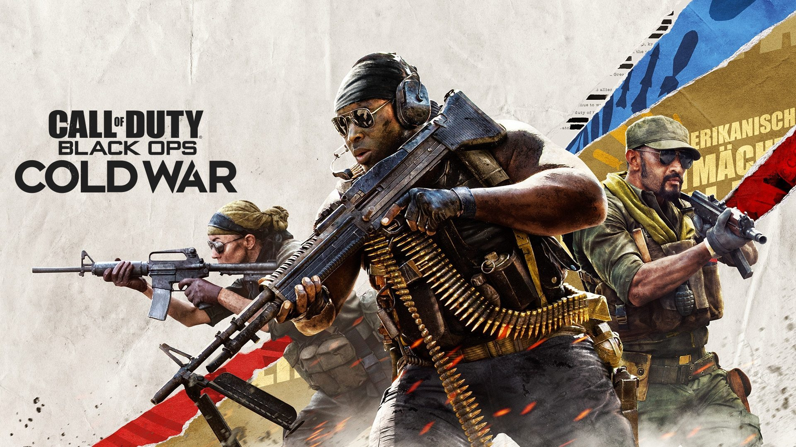

Los juegos más exitosos
Call of Duty: Black Ops Cold War, luego de un sólido Modern Warfare y junto a un incólume Warzone, se ha convertido en uno de los lanzamientos de mayor repercusión del 2021, siguiendo así a cabalidad el legado de sus predecesores. La obra de Treyarch y Raven Software, sin suponer una revolución en la fórmula de la saga, ha cumplido con lo esperado por sus fanáticos y, a pesar de los inconvenientes, ha tenido un desenvolvimiento magistral en lo económico.
Marvel's Spider-Man y Miles Morales ya han vendido más de 33 millones de unidades en sus versiones de PS4 y PS5. En la última aventura del universo de Spider-Man, el adolescente Miles Morales intenta ajustarse a su nuevo hogar mientras que sigue los pasos de su mentor, Peter Parker, para convertirse en el nuevo Spider-Man. Pero cuando un feroz enfrentamiento por el poder amenaza con destruir su hogar, el aspirante a héroe entiende que un gran poder conlleva una gran responsabilidad.

FIFA 22 ha sido el juego más vendido de 2021 en todos los países de Europa, menos en dos. La saga de FIFA es, durante todas las temporadas, uno de los videojuegos más vendidos del año. Este juego se acerca aún más el juego a la realidad gracias a mejoras significativas en la jugabilidad y una nueva temporada de novedades en todos los modos.